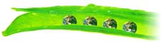
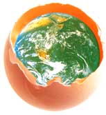

|
আপনার প্যাকেজিং জগত. |
|
বন, সমুদ্র, আকাশ - একটি সূক্ষ্ম ভারসাম্যহীনতা, প্রকৃতি মানুষের জীবনকে আবৃত করে। অসীম আকাশমন্ডল, পরিবর্তে, মা পৃথিবীকে ঢেকে রাখে, যা ঐক্যবদ্ধভাবে মৃত্তিকার সাথে সংযুক্ত। অন্য, কিন্তু ভিন্ন, বাস্তব, কাওাশিমা প্যাকেজ পণ্য না; পণ্য আমাদের গ্রাহকের সীমাহীন সম্ভাব্য সঙ্গে ভরাট - প্রতিটি পণ্য নিজেই একটি গতিশীল মহাবিশ্বের কাওয়াসিমা একটি ব্যাপক প্যাকেজিং পরিকল্পনার অংশ হিসাবে আপনার পণ্যের জন্য শারীরিক লিফটটি দেখে - নিখুঁতভাবে, সংবেদনশীলভাবে, যেমন 85 বছরেরও বেশি সময় ধরে আছে | |
|  আত্মা |
অবশেষে, পাঠককে প্রাপককে প্রাপকের নিকট কৃতজ্ঞতা ও শ্রদ্ধার ছায়া গোছানোর জন্য অভিযুক্ত করা হয়। প্যাকেজিং খুব, প্রেরকের আত্মা একটি অভিব্যক্তি; এটা হৃদয় প্রকাশ যে মুখ ডিজাইন করা হয় এই আত্মা মধ্যে, কাওাশিমা পুনর্ব্যবহৃত উপকরণ উন্নয়নশীল দ্বারা, পরিবেশগত অন্যোন্যজীবিত্ব একটি প্রতিশ্রুতি প্রকাশ। প্যাকেজিংয়ের ক্ষেত্রে আমাদের দৃষ্টিভঙ্গি এমন একটি বিষয়, যা মানব প্রকৃতির প্রকৃতির মতোই। আমাদের আন্তরিকতা আপনার পণ্যের মোড়কে একটি এক করে, বস্তু এবং ফর্ম যে সেরা প্রেরক হৃদয় ঢালা মধ্যে মিথ্যা।
|
|
মিষ্টান্ন মেশিন নির্মাতারা হিসাবে 1912 সালে কাওয়াসিমা প্রতিষ্ঠিত হয়। 1951 সালে, caramels মোড়ানো জন্য একটি মেশিন উন্নয়নশীল পরে, আমরা স্বয়ংক্রিয় প্যাকেজিং যন্ত্রপাতি উত্পাদন মধ্যে ছড়িয়ে। আমরা পরে 350 বিভিন্ন মডেলের মধ্যে 35,000 মেশিনের অধিক উত্পাদন, এবং 1000 লাইন সিস্টেম ইনস্টল করা, যার মাধ্যমে আমরা বিশ্বব্যাপী একটি শীর্ষ ব্র্যান্ড হিসাবে আমাদের স্থায়ী অবস্থান স্থাপন করেছেন। কাওয়াসিমা এর নির্ভরযোগ্যতা এবং কর্মক্ষমতা নিরাপত্তা একটি বড় কম্বল আপনার মহাবিশ্ব গোপন।
|
 আস্থা আস্থা |
| সংস্কৃতি |
ঘাস, পাতা, গাছের ছাল - জাপানিরা দীর্ঘদিন ধরে খাবারের মোড়ক দিয়ে প্রকৃতির আশীর্বাদ ব্যবহার করে। চা অনুষ্ঠানের উন্নয়নের সাথে সাথে, চা কনফেকশনের জন্য কাগজ মোড়ানো একটি শিল্পে পরিমার্জিত হয়। "প্যাকেজিং শিল্প" যেটি বিশ্বব্যাপী জাপানিদের জন্য কৌশিমার উত্তরাধিকার; এটা আমাদের সংস্কৃতি। কাওয়াসিমা একটি বিশ্বব্যাপী দৃষ্টিকোণ এবং সর্বশেষ যদি প্রযুক্তির সাথে ঐতিহ্যগত জাপানি নান্দনিক সংবেদনশীলতা এবং কারিগরিতা যুক্ত করে; আমরা শিল্প রাষ্ট্র পুনঃসংগাকরণ হয়। |
|
কনজিউমার প্যাকেজিং যন্ত্রপাতি থেকে লাইন সিস্টেম থেকে, তারপর ট্রানজিট প্যাকেজিং যন্ত্রপাতি থেকে উপাদান হ্যান্ডলিং যন্ত্রপাতি - প্রযুক্তিগত উন্নয়নে কাওয়াসিমা শক্তি ক্রমাগত শিল্প নেতৃত্বাধীন হয়েছে। এখন, কম্পিউটার প্রযুক্তি একীভূত করার মাধ্যমে, আমরা প্যাকেজিং লাইনের সাথে উত্পাদন লাইনের ইন্টারফেসিংয়ের ক্ষেত্রে স্থানান্তরিত করেছি। উত্পাদনের, প্যাকেজিং, বিতরণ - উৎস থেকে প্রবাহের প্রবাহ এবং প্রবাহের ম্যাক্রো পরিবেশের সঠিক উপলব্ধি সহ, আমরা সর্বোত্তম সিস্টেম তৈরি করতে সক্ষম। মোট সিস্টেম প্ল্যানার হিসাবে, কাওয়াসিমা সবসময় নতুন দৃষ্টিভঙ্গি অনুসরণ করছে। |
দৃষ্টি | | |
|